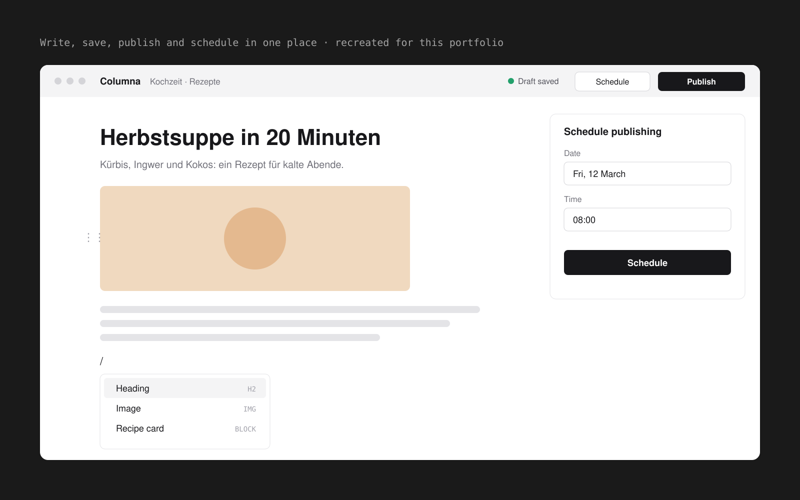
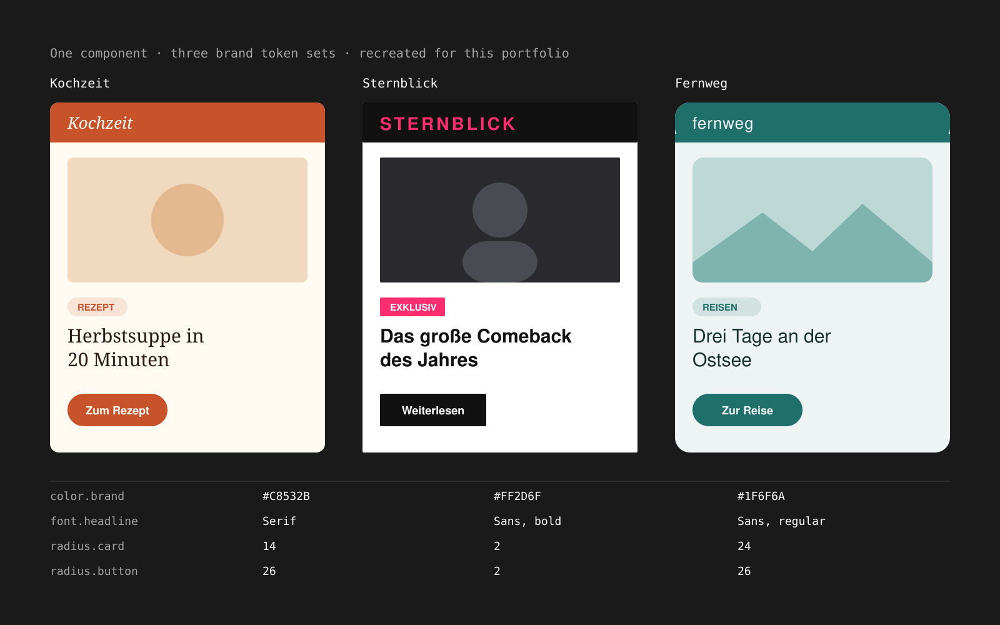

Media / Publishing · 2024
Columna
Two design systems behind a block-based CMS for magazine editors
Problem
Columna is a block-based CMS, in the style of Notion, for editors who write for several magazine brands, with AI built into the writing workflow. It was built to replace an older CMS step by step.
The old system looked like enterprise software from another decade and was full of manual steps. It still worked, but only because editors knew it by heart, so anything new had to beat years of habit.
Research
Editors didn't write in the old CMS at all. They drafted in Microsoft Word, then copied the text over and formatted it again by hand before publishing. The CMS was the last, slowest step, rather than the place the work happened.
Insight
If editors can write in the CMS from the first word, the copy-and-reformat step disappears.
Making
Write, save, publish and schedule in one place
Editors start an article directly in Columna, build it from blocks, save drafts, publish, or schedule it for later, instead of drafting in Word and reformatting in the CMS. Every step that used to happen outside the system now happens inside it.

Two design systems instead of one
We built two design systems, each with its own team: one for the components readers see on the brand sites, and one for the components editors use inside the CMS. A single shared system would have pulled in two directions, since the reader side has to carry each brand's identity, while the editor side is one work tool where speed and consistency matter more than brand. I worked across both.
Tokens, so a brand swaps in without a redesign
Both systems are built on design tokens: named values for color, type and shape. A component is designed once, and each brand's tokens give it that brand's look, so supporting another brand means a new set of tokens, not new components.

Outcome
The project was stopped before its official launch, so there are no usage numbers to show.
What I take from it: designing two systems for two very different audiences, and building on tokens so one component can serve many brands. Both carry over to any product that has to look different for different customers while staying one system underneath.
.say hello
Hiring a product designer who brings AI into the process? Let's talk.
mark.albaran [at] outlook.com
LinkedIn (opens in a new tab)